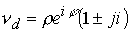

|
В. И. ЕЛИСЕЕВ ВВЕДЕНИЕ В МЕТОДЫ ТЕОРИИ
ФУНКЦИЙ ПРОСТРАНСТВЕННОГО КОМПЛЕКСНОГО ПЕРЕМЕННОГО |
|
10.15. СТРУКТУРА КОМПЛЕКСНОГО ПРОСТРАНСТВА.
Вершиной классического математического анализа является теория функций комплексного переменного (ТФКП), основателем которой является французский математик О. Коши (1789-1857г.).
Теория дошла до нашего времени почти в том виде, в котором она была создана.
Комплексная плоскость представлена комплексным числом
|
(10.15.1) |
Расширение поля вещественных чисел достигнуто введением мнимой единицы I,которая является обозначением корня квадратного из –1,операции не выполнимой в числовом поле вещественных чисел
Введение мнимой единицы явилось результатом естественного внутреннего развития теории вещественных чисел. Связь между вещественными координатами X, Y осуществляется через мнимую единицу I и комплекс (10.15.1) выступает на плоскости (Z) как одна точка z. Точка на плоскости задается одной переменной Z, а точки X, Y являются вложенными точками. Точка Z является координатой и не является простым совмещением координат X, Y в одной точке на плоскости.
Этот момент одно из важных свойств чисел комплексного поля.
Комплекс Z подчиняется законам операций над действительными числами и выступает как одно число.
В комплексе (1) имеем
|
-модуль, -аргумент. |
(10.15.2) |
Аргумент комплекса имеет период изменения , поэтому точка на действительной оси, например +1, определяется двумя значениями аргумента
Таким образом, точка с модулем имеет окрестность, где две различные точки находятся на верхнем и нижнем берегу разреза плоскости по оси X.
За нулевую точку, как начало координат принимается точка с модулем равным и неопределенным аргументом 
|
(10.15.3) |
Алгебраическая операция извлечения корня из числа в комплексном числовом поле рассматривается как решение уравнения , где - комплексное число. Пусть , тогда имеем равенство , откуда, учитывая периодичность аргумента , будем иметь и следовательно
или
|
(10.15.4) |
Уравнение имеет n-корней. Количество корней определяется аргументом, а не извлечением корня из модуля.
В настоящее время имеются две числовые системы; это вещественные числа и комплексные числа в смысле Коши. Расширение поля комплексных чисел возможно с учетом перечисленных выше особенностей.
Теорема 1
Пространственное поле чисел представляется комплексом
|
(10.15.5) |
Где
i, j –мнимые единицы (отличаются только обозначением), являются корнями уравненияДоказательство.
Доказательство включает четыре основных положения: необходимость введения второй мнимой единицы
j (или вернее обоснование необходимости двух мнимых единиц i, j, отличающихся только обозначением), которая является как и первая решением квадратного уравнения .Обосновать наличие нетривиального решения квадратного уравнения
 в виде произведения двух мнимых единиц , и обосновать коммутативность их произведения .
в виде произведения двух мнимых единиц , и обосновать коммутативность их произведения .
Показать, что новые числа в виде делителей нуля подчиняются законам алгебраических операций над действительными числами и комплексных чисел в смысле Коши.
Показать, что расширение поля комплексных чисел Коши является естественным и внутренней необходимостью развития алгебры действительных и комплексных чисел Коши.
Рассмотрим извлечение корня из +1. Согласно формуле (10.15.4) имеем

Имеем тривиальное решение Оба решения лежат на действительной оси.
Квадрат отрицательного и положительного числа дает число положительное, поэтому корень квадратный из положительного числа как обратная операция возведения в квадрат дает два решения. В этом и заключается тривиальность решения.
Кроме этого замечания есть еще один существенный фактор в решении. Любое число в нулевой степени дает +1 (в том числе и комплексное
).В связи с этим применение формулы для выделения в комплексном числе модуля и аргумента при равенстве последнего нулю необязательная операция для данного случая извлечения корня из +1.
Поэтому, если применяется формула (10.15.4), то для операции извлечения корня из +1 можно использовать выражение . При этом любой аргумент в плоскости комплексного переменного можно рассматривать как исходный угол . В результате операция извлечения корня из +1 сводится к выражению
Откуда имеем
Таким образом, имеем один корень. При устранении неопределенности в возведении в нулевую степень любого числа и сохранения закона извлечении корня квадратного в комплексной записи получили новое противоречие.
Это противоречие исключается, если ввести два счетчика периодичности аргумента, так что будем иметь
Введение дополнительного счетчика равносильно введению второй мнимой единицы
j. При этом, если оставить периодичность аргументов в сомножителях , то получимТаким образом, если оставить один счетчик периодичности и одинаковую величину периодичности аргументов  , то результат извлечения корня вновь приводит к одному значению.
, то результат извлечения корня вновь приводит к одному значению.
В связи с этим, вводится вместо формулы зависимости счетчиков разная величина периодичности при одном К.
Формула извлечения корня квадратного из +1 запишется в виде
Соблюдение законов алгебры требует введения новой мнимой единицы. Произведение двух мнимых единиц коммутативно, так как извлечение корня не зависит от порядка сомножителей под корнем.
Пространственный комплекс преобразуется к следующему виду
|
(10.15.6) |
где модуль комплекса действительный, выделяется из (10.15.5) последовательным применением дважды формулы Коши.
|
(10.15.7) |
Где
|
(10.15.8) |
Аргумент
|
(10.15.9) |
Аргумент
|
(10.15.10) |
В соответствии с формулами (10.15.6 - 10.15.10) точка в пространстве определена как одна структурная точка. Точка в пространстве не определена набором значений координат , а представляет структуру вложенных плоскостей в пространство. Набор координат определяет только положение точки в пространстве, комплекс (10.15.6) определяет положение и структуру точки. Это новое свойство поля чисел.
В результате к двум существующим числовым полям (вещественному и комплексному в смысле Коши) добавлена пространственная комплексная система чисел.
Комплексное пространство существенно меняет представление о понятиях: точки, линии, поверхности, объема, и т. д.
До настоящего времени линия считалась одномерным пространством. Однако если на линии ввести начало координат как систему отсчета, то линия перестает быть одномерной. Переход через точку 0 нельзя осуществить из положительной области значений в отрицательную, необходимо обогнуть точку 0 по дужке радиуса. Каким бы не был малым радиус  точка ноль будет иметь в своей окрестности деление линии на положительное значение и отрицательное .В этом смысле точка ноль является выколотой точкой на линии, которая одновременно принадлежит пространству другого измерения. Можно игнорировать этот факт, называя линию одномерным пространством, однако фактически в точке 0 линия терпит разрыв, каким бы минимальным не был радиус дужки. Но в этом случае линия уже не является одномерным пространством.
точка ноль будет иметь в своей окрестности деление линии на положительное значение и отрицательное .В этом смысле точка ноль является выколотой точкой на линии, которая одновременно принадлежит пространству другого измерения. Можно игнорировать этот факт, называя линию одномерным пространством, однако фактически в точке 0 линия терпит разрыв, каким бы минимальным не был радиус дужки. Но в этом случае линия уже не является одномерным пространством.
Далее если в плоскости фиксировать начало координат как точку 0 с неопределенным аргументом , то точка становится выколотой точкой на плоскости с окрестностью радиуса . Вновь точка не принадлежит плоскости, а ее окрестность принадлежит пространству другого измерения. Неопределенность аргумента приобретает особо важное значение, когда точка превращается в критическую сингулярную точку. В этом случае по теореме Коши имеем
|
(10.15.11) |
Продолжая эту логическую цепочку, восстановим к плоскости цилиндрическую трубочку в сечении, имеющую радиус равный радиусу окрестности нуля. В этом случае комплексная система координат будет соответствовать этому геометрическому построению
Откуда имеем
|
(10.15.12) |
Третья координатная ось согласно (10.15.12) представляет комплекс в смысле Коши свернутый в трубочку. В формулах (10.15.12) имеем
|
(10.15.13) |
Таким образом, модуль комплекса есть расстояние от комплексной плоскости по выколотой оси.
Пространство выколотой оси принадлежит пространству более высокого измерения
Если комплексы по формулам (10.15.8) имеют одинаковые аргументы, то комплекс (10.15.6) записывается в виде
где все параметры действительные числа. Можно рассматривать поверхность сферы постоянного радиуса с выколотой поверхностью  -туннеля, выраженной в виде комплекса
-туннеля, выраженной в виде комплекса
Простейшей пространственной кривой будет циклонная кривая  .Кривая характеризуется двумя аргументами и двумя радиусами: -соответственно радиус сферы и радиус сечения выколотой оси. Двигаясь по кривой
.Кривая характеризуется двумя аргументами и двумя радиусами: -соответственно радиус сферы и радиус сечения выколотой оси. Двигаясь по кривой  ,аргумент
,аргумент  получит приращение от начальной до конечной точки
получит приращение от начальной до конечной точки  , а аргумент
, а аргумент  приращение
приращение  . На кривую можно натянуть поверхность без точек самопересечения. Геометрия циклонной кривой соответствует алгебраическим операциям по введению новой мнимой единицы. Кроме того становится оправданным операция по исключению нуля как аргумента при извлечении корня из +1 по формуле комплексного анализа в смысле Коши. Угол
. На кривую можно натянуть поверхность без точек самопересечения. Геометрия циклонной кривой соответствует алгебраическим операциям по введению новой мнимой единицы. Кроме того становится оправданным операция по исключению нуля как аргумента при извлечении корня из +1 по формуле комплексного анализа в смысле Коши. Угол  в комплексной плоскости при любом своем значении по отношению к пространственному углу должен выступать как нулевая точка отсчета, поэтому была выполнена операция замены . Таким образом за аргумент равный нулю выступает любое значение из плоскости. Это привело к рассмотрению двух равноправных взаимно перпендикулярных плоскостей.
в комплексной плоскости при любом своем значении по отношению к пространственному углу должен выступать как нулевая точка отсчета, поэтому была выполнена операция замены . Таким образом за аргумент равный нулю выступает любое значение из плоскости. Это привело к рассмотрению двух равноправных взаимно перпендикулярных плоскостей.
При такой геометрической интерпретации абстрактные понятие точки, линии детализируются. Каждая пространственная точка имеет окрестность, лежащую параллельно плоскости , а циклонная кривая  оформляется не виде линии а в виде спирали. Часть кривой проходит по внешности сферы, делая приращения по углу
оформляется не виде линии а в виде спирали. Часть кривой проходит по внешности сферы, делая приращения по углу  , часть проходит по внутренней поверхности изолированной оси также имея приращения
, часть проходит по внутренней поверхности изолированной оси также имея приращения  , так что угол
, так что угол получает приращение ,а угол соответственно
получает приращение ,а угол соответственно 
Интегральная теорема Коши дает
|
(10.15.14) |
Так как точка представляет изолированное пространство, которое заключено в замкнутой поверхности, натянутой без точек самопересечения на циклонную кривую , реализуется теорема Коши в виде поверхностного интеграла
|
(10.15.15) |
Возможны и другие варианты вычисления (например с учетом поверхности выколотой оси).
В пространстве реализуются классические интегральные теоремы Стокса, Остроградского, которые устанавливают независимость криволинейного интеграла от пути интегрирования или независимость поверхностного интеграла от ее деформации в пространстве.
Подпространство делителей нуля.
Подпространство делителей нуля выделяется при выполнении двух условий в комплексах
.|
Именно |
(10.15.16) |
Тогда формулы (10.15.6 - 10.15.10) преобразуются к виду
|
(10.15.17) |
|
(10.15.18) |
Комплекс (6) приводится к виду
|
(10.15.19) |
В пространстве корень из нуля не равен нулю в силу наличия изолированного направления . В действительной области и комплексной в смысле Коши естественно . В пространстве, чтобы выполнялись операции при наличие изолированного аргумента комплекс (10.15.19) запишется в виде
|
 |
(10.15.20) |
Подпространство делителей нуля состоит из чисел, имеющих равные значения координат по двум взаимно перпендикулярным направлениям и имеющим разные точки в окрестности начала координат, повернутые относительно друг друга на угол . В связи с этим в цилиндрических координатах это мнимые точки не имеющие модуля. В сферических координатах делители нуля характеризуются сингулярным аргументом и модулем равным корню из нуля  . Это новое свойство делителей нуля, которое указывает на существование в пространстве области другого измерения. Появление делителей нуля как чисел является естественным развитием комплексной алгебры Коши. Известно, что если , то возможны три варианта:
. Это новое свойство делителей нуля, которое указывает на существование в пространстве области другого измерения. Появление делителей нуля как чисел является естественным развитием комплексной алгебры Коши. Известно, что если , то возможны три варианта:
Первые два варианта тривиальны. Третий вариант также реален, но не исследован и реализуется в делителях нуля.
Тогда,
|
(10.15.21) |
Неопределенность исчезает и объясняется свойство делителей нуля. Сингулярность аргумента скомпенсирована и остается квадрат корня из нуля равный нулю.
Необходимо иметь ввиду, что ноль в пространстве имеет два неопределенных аргумента при любых  , в том числе и для изолированного аргумента.
, в том числе и для изолированного аргумента.
Мини оглавление:
[0], [1.1.1, 1.1.2, 1.1.3, 1.1.4, 1.1.5, 1.1.6, 1.1.7, 1.1.8, 1.2, 1.2.1, 1.2.2, 1.2.2.a, 1.2.2.b, 1.2.2.c, 1.2.2.d, 1.2.2.e, 1.2.2.f, 1.2.2.g, 1.2.2.h, 1.2.3, 1.3.1, 1.3.2, 1.3.3, 1.3.4, 1.3.5, 1.3.6, 1.4.1, 1.4.2, 1.5, 1.6, 1.7.1, 1.7.2, 1.7.3.1, 1.7.3.2, 1.7.3.3, 1.7.4.1, 1.7.4.2, 1.8.1], [2.1, 2.2],[3.1, 3.2, 3.3, 3.4.1, 3.4.2, 3.4.3, 3.4.4, 3.4.5],[4.1, 4.2, 4.3, 4.4],[5.1, 5.1.Рис.52, 5.2, 5.3, 5.4, 5.4.Т1, 5.4.Т2, 5.4.Т3, 5.5.1, 5.5.2, 5.5.3, 5.5.4],[6.1.1, 6.1.2, 6.2.1, 6.2.2, 6.2.3, 6.2.4, 6.2.5, 6.3, 6.4.1, 6.4.2, 6.5.1, 6.5.2],[7.1, 7.2, 7.3, 7.4, 7.5, 7.6, 7.7.1, 7.7.2, 7.8.1, 7.8.2, 7.8.3, 7.9],[8.1, 8.2.1, 8.2.2, 8.3, 8.4, 8.5, 8.6, 8.6.T1, 8.7, 8.8.1, 8.8.2, 8.8.3, 8.9.1, 8.9.2, 8.9.3, 8.10, 8.10.T2, 8.10.T3],[9.1, 9.2, 9.3, Рис.88, 89, 90, 91, 92, 93, 94, 95, 96, 97, 98, 99, 100],[10.1, 10.2, 10.3, 10.4, 10.5, 10.6, 10.7, 10.8, 10.9, 10.10, 10.11, 10.12, 10.13, 10.14, 10.15.1, 10.15.2, 10.16.1, 10.16.2, 10.17, 10.18],[11]
Размещенный материал является электронной версией книги: © В.И.Елисеев, "Введение в методы теории функций пространственного комплексного переменного", изданной Центром научно-технического творчества молодежи Алгоритм. - М.:, НИАТ. - 1990. Шифр Д7-90/83308. в каталоге Государственной публичной научно-технической библиотеки. Сайт действует с 10 августа 1998.
E-mail: mathsru@gmail.com